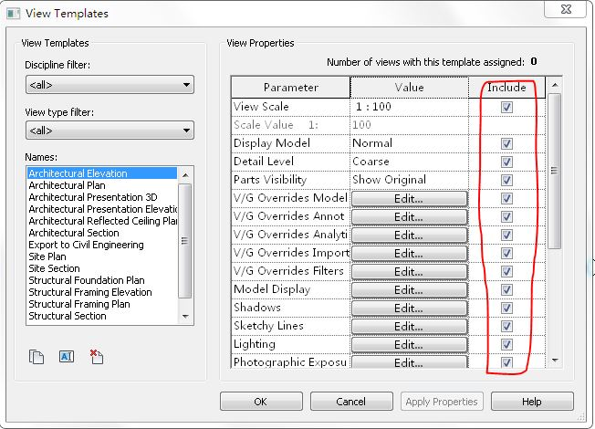

View Template Include Setting
A quick note to highlight a solution shared by Teocomi to solve a longstanding question in the Revit API discussion forum thread on view template 'include':
Question: Does the Revit API provide any access to the view template 'include' settings defined by the check boxes in this form?

Answer: I can get the 'includes' via viewTemplate.GetNonControlledTemplateParameterIds.
The method returns a list of parameter ids, and you can then use viewTemplate.Parameters to map them.
The same also works for setting them, cf. the following example:
// Create a list so that I can use linq var viewparams = new List<Parameter>(); foreach( Parameter p in viewTemplate.Parameters ) viewparams.Add( p ); // Get parameters by name (safety checks needed) var modelOverrideParam = viewparams .Where( p => p.Definition.Name == "V/G Overrides Model" ) .First(); var viewScaleParam = viewparams .Where( p => p.Definition.Name == "View Scale" ) .First(); // Set includes viewTemplate.SetNonControlledTemplateParameterIds( new List<ElementId> { modelOverrideParam.Id, viewScaleParam.Id } );
Thank you, Teocomi, for sharing this!